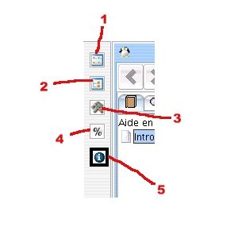

Fig. 02 : perspectives
|
1- Physical perspective : In
this perspective, you see your collection as it is on your disks :
files, directories, m3u files etc... All actions are performed on
an identified physical file. This perspective is pretty useful but has
a big disadvantage : if you have several times the same track in
different devices ( lets say once on your hard disk, once on a CD ),
you will see it twice in all views. This is the same for playlists.
2- Logical perspective : In this perspective, you see your collection
folowing id3 tags informations : as styles, authors, albums, tracks and
logical playlists ( a logical playlist maps several identical physical
m3u playlists). This perspective is usefull only if your
collection is well taged, otherwise everything will be ' unknown'. In
opposition to physical playlist, you now see tracks, not files. A track
is a logical mapping to one or more files. It means you will see a
track only once even if you have several physical files for this track.
If you modify a logical playlist, all associated physical playlists (
.m3u files ) will be modified together.
3- Configuration perspective : This contains views to configure Jajuk (
options ) and to create or modify devices. A device is a set of
physical files ( like a directory on your hard disk, a CD, a music
player ...).
4- Statistics perspective : Contains various pies and histograms about
your collection : number of tracks, devices sizes, style repartition,
collection size. More stats will be available in next releases.
5- Help perspective : Should be this current perspective. Contains
Jajuk help and a 'About' view giving various informations on the
project and the runtime environment.
|